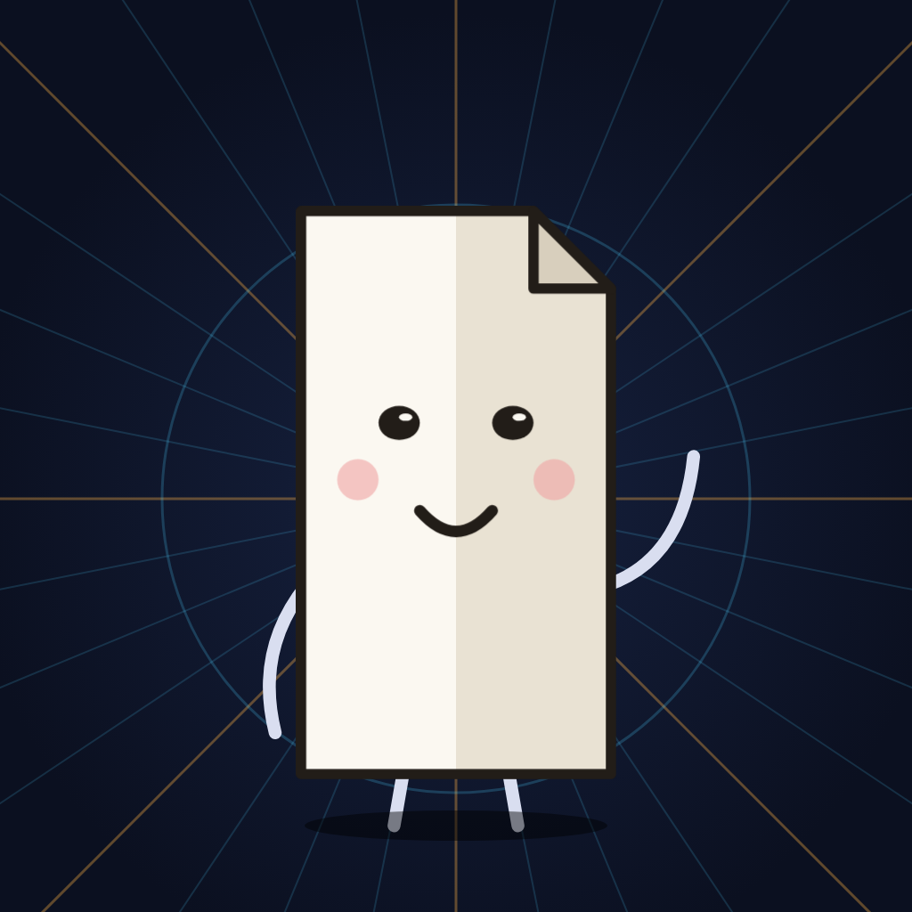

Piri
Short animated stories about the ideas that shape our world: science, history, philosophy, psychology, sociology and economics. Every story ends in today.
Kâğıttan bir karakterin anlattığı kısa animasyonlar: bilim, tarih, felsefe, psikoloji, sosyoloji ve ekonomi. Her hikâye bugüne bağlanır.
Piri Studio
Piri Studio is the private desktop tool we use to send our own finished videos to our own TikTok account as drafts. It is not offered to the public and does not access anyone else's account.
Contact: nobody.service807@passinbox.com